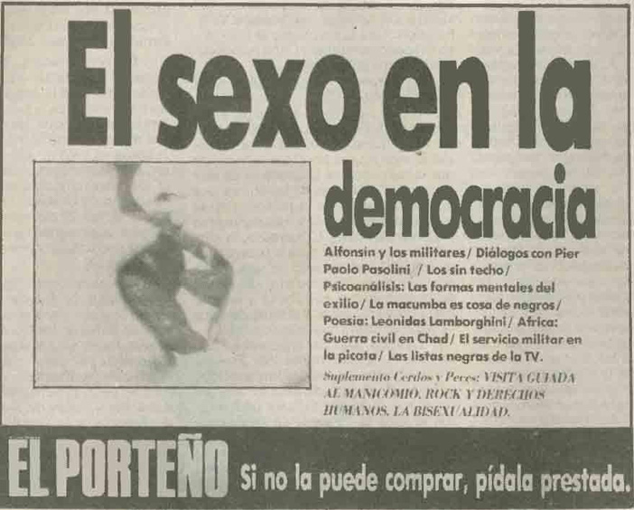

Luciano Uzal
Universidad de Buenos Aires, Facultad de Filosofía y Letras,
Instituto de Geografía “Romualdo Ardissone”. Buenos Aires,
Argentina.
CONICET. Buenos Aires, Argentina.
Recibido: 11 de marzo de 2022. Aceptado: 26 de julio de 2022.
A partir de 1982, la recuperación del espacio urbano en la ciudad de Buenos Aires por parte de las mayorías populares fue una dimensión clave del proceso político que llevó al país de la dictadura a la democracia. Este trabajo es un análisis de las marcas textuales que este proceso dejó en El porteño (1982-1993), una de las revistas políticas y culturales más importantes de la década del ochenta, durante los años 1982 y 1984. El primer punto de este análisis muestra cómo el modo de pensar, escribir e imaginar una ciudad en y para la democracia no pudo prescindir de cierta semblanza de la ciudad dictatorial. De esta caracterización destaca un espacio urbano ordenado artificialmente por medio de la represión y clausurado para las formas de participación política. En segundo lugar, se analiza el modo en que la movilización popular es pensada a la luz de la crisis política de la dictadura y cómo sirvió para plantear interrogantes respecto a los modos de participación en el marco del retorno de la actividad política sindical, partidaria y militante por los derechos humanos. Las ocupaciones políticas de calles, avenidas y plazas fueron un modo de anticipar y experimentar la democracia durante la transición. Finalmente, se describe el modo que el impulso democratizador consolidado durante 1983 se manifiesta durante el primer año de gestión radical en una serie de discusiones que ponen el foco en las tensiones en el espacio urbano y que plantean preguntas ético-políticas respecto a cómo vivir con otrxs.
Palabras clave: USOS DEL ESPACIO URBANO. TRANSICIÓN DEMOCRÁTICA. MEMORIAS DE LA POLÍTICA. REVISTAS CULTURALES.
Since 1982, the recovery of urban space in the city of Buenos Aires by the popular majorities was a key dimension of the political process that led the country from dictatorship to democracy. This paper is an analysis of the textual marks left by this process in El porteño (1982-1993), one of the most important political and cultural magazines of the 1980s, during 1982 and 1984. Firstly, we analyze how the way of thinking, writing and imagining a city in and for democracy could not avoid a certain resemblance to the dictatorial city. This characterization highlights an urban space artificially ordered by means of repression and closed to forms of political participation. Secondly, this paper analyzes how popular mobilization is understood in the light of the dictatorship’s political crisis and how it served to raise questions about the modes of participation in the context of the return of political activity in trade unions, political parties and human rights activists. The political occupations of streets, avenues and squares were a way of anticipating and experiencing democracy during the transition. Finally, this paper shows how the democratizing impulse consolidated during 1983, during the first year of the radical party’s administration raised a series of discussions focusing on tensions in urban space and ethical-political questions about how to live with others.
Keywords: URBAN SPACE USE. DEMOCRATIC TRANSITION. MEMORY OF POLITICS. CULTURAL MAGAZINES.
Palavras-chave: USO DO ESPAÇO URBANO. TRANSIÇÃO DEMOCRÁTICA. MEMÓRIA DA POLÍTICA. REVISTAS CULTURAIS.
La cuestión democrática, en lo que tiene a la vez de acuciante y de inactual, aloja en sí una pregunta abierta respecto de lo común que no puede ser sin más reducida a lo público, en su oposición tradicional con lo privado. Con una impronta ético-política que rebasa la dimensión jurídico-institucional, la pregunta por lo común no se adecúa del todo a las coordenadas que permiten, sin repetir y sin soplar, diferenciar público de privado, individuo de sociedad o Estado de sociedad civil. Por ello, las controversias en torno a la democracia y lo democrático siempre están en exceso respecto de una discusión sobre la realización regular de elecciones, la vigencia del régimen constitucional o del Estado de derecho (Tatián, 2017). En las últimas décadas, la consolidación de la democracia en la Argentina supuso puntos álgidos de discusión que, si bien reconocían de manera absoluta estos caracteres formales como necesarios, no siempre se los consideraron como suficientes. La pregunta de en qué consiste una verdadera democracia y cómo seríamos o no capaces de construirla, muy presente en los primeros años de la posdictadura, no tenía una respuesta única y se expresaba en instancias marcadamente heterogéneas de la vida social, verbigracia, desde los juicios por violaciones de los derechos humanos hasta en los debates sobre la pornografía en el marco del fenómeno del destape (Feld y Franco, 2015; Manzano, 2019; Insausti y Ben, 2023). De este modo, el llamado a la democratización de la vida política del país fue una interpelación amplia y transversal de la vida social que no debería pensarse únicamente acotado a la vía institucional –el retorno de la actividad política partidaria, la realización de comicios electorales, la reapertura de ambas cámaras legislativas, etc.– sino también a las prácticas y experiencias políticas, productoras también de los modos de subjetivación contemporáneos. En ese sentido, qué se entendía por democracia fue objeto de reelaboración y experimentación en ámbitos que tensionaban y a la vez motorizaban una reflexión sobre lo común. El presente artículo busca reflexionar sobre una de estas instancias que le han dado forma a la democracia en la Argentina y han actualizado la pregunta por lo común y la comunidad luego de los efectos atomizadores de la política del terror: el retorno de la ocupación política de calles y plazas como parte de la experiencia urbana propia de la democracia.
La participación de las mayorías populares convocadas por organizaciones sindicales, partidarias y de derechos humanos fue parte del proceso político que llevó al fin de la dictadura y al retorno de la democracia. Esta recuperación del espacio urbano1 para la pŕactica política fue, además de un modo de anticipar y dar forma a la nueva democracia, una manera de recrear y experimentar la ciudad bajo coordenadas muy distintas a las que habían predominado los últimos años. De este modo, si bien la relación entre espacio urbano y dictadura ha sido puesta de relieve, en general con foco en las políticas urbanas realizadas por la gestión de Osvaldo Cacciatore en la Municipalidad de Buenos Aires (1976-1982) (Menazzi, 2013, 2018), la pregunta respecto al modo en que la crisis política de la dictadura en el marco de la transición democrática implicó transformaciones en la experiencia que se hacía de la ciudad ha recibido menos atención (Sánchez Trolliet, 2018). Con la intención de darle lugar a este interrogante, me focalizaré en las marcas textuales que esas experiencias urbanas dejaron en la revista político-cultural El porteño durante los últimos dos años de la dictadura y el primer año de democracia (1982-1984). El periodo seleccionado toma como punto de partida el acontecimiento bisagra de la marcha de la Confederación General del Trabajo (CGT), realizada en marzo de 1982, que terminó con una brutal represión en el centro de la ciudad de Buenos Aires. Si bien existen otros antecedentes, este acontecimiento clave permite fechar el inicio de una serie de ocupaciones políticas del espacio urbano contra el gobierno militar que se dieron en los últimos dos años de la dictadura. Luego, la decisión de incluir dentro del recorte temporal el primer año de gobierno de Raúl Alfonsín (1983-1989) apunta a captar la continuidad de ese impulso democrático que gana fuerza y se expresa en las calles durante 1983. De este modo, en 1984 estos usos del espacio urbano producirán tensiones en las que se disputarán los sentidos de lo democrático. A los objetivos de este artículo, no se trata tanto de realizar una comparación de esas marcas textuales en dictadura y luego en democracia, sino de mostrar cómo las caracterizaciones de una ciudad dictatorial y una ciudad democrática operan en el imaginario político, tanto a un lado como al otro del corte. Se trata de nociones que se piensan entre sí, y en la que una no puede terminar de tomar forma del todo sin la otra.
El Porteño fue una revista cultural fundada por Gabriel Levinas, Miguel Briante y Jorge Di Paola en enero de 1982, con un tiraje mensual que continuó hasta febrero de 1993. Si bien la revista tuvo distintos momentos a lo largo de sus 10 años, los primeros estuvieron marcados fundamentalmente por su oposición al régimen militar desde el campo artístico e intelectual y el protagonismo de organismos y activistas por los derechos humanos. A su vez, como señala Mariana Cerviño (2012), una de las singularidades de la revista fue recuperar la tradición de las revistas culturales argentinas, aun manteniendo en buena medida los rasgos de sofisticación y rigurosidad de las discusiones propias de los círculos intelectuales, pero alcanzando un público más amplio, similar al de la revista Humor.2 En esta misma línea, Roxana Patiño (1997) señala que se trató de una revista que por su origen debería haber quedado confinada a un círculo restringido de intelectuales, pero que sin embargo logró tomar la agenda y los temas de la intelectualidad porteña y amplificarlos.
Durante los primeros años, si bien resulta posible identificar una línea editorial a partir de las Cartas del Director –el joven Gabriel Levinas– y algunas intervenciones de Miguel Briante como jefe de redacción, El Porteño no dejará nunca de convocar a periodistas, artistas e intelectuales de las más variadas posiciones políticas –exceptuando a apólogos de la dictadura y sus políticas represivas– como también de distintas edades y momentos generacionales (Coca, 2014). De hecho, el gesto afirmativo de esa heterogeneidad y su composibilidad será parte de la identidad misma del proyecto editorial. Este rasgo de la revista –ya sea que se lo resalte como una decisión editorial, política, estética, ética o epistemológica– se mostrará como la puesta en acto de un principio democrático que es, a su vez, objeto de permanente controversia y reflexión en las páginas de la revista. En distintas oportunidades, El Porteño hará parte al público lector de disensos y rencillas entre sus integrantes y colaboradorxs regulares, priorizando la polémica por sobre la muestra de unidad hacia el interior de la revista.
Finalmente, otro gesto sobre cómo la cuestión democrática era articulada en la revista –como objeto de reflexión y principio de acción– fue la permanente diferenciación respecto de los valores, temas y posiciones asociadas directamente a la dictadura y al periodismo que funcionaba como caja de resonancia del discurso militar. Así, en primer lugar, El Porteño era reconocida porque aceptaba la publicación de notas y artículos que otros medios rechazaban por motivos ideológicos a periodistas de su propio staff. En segundo lugar, su posicionamiento contra la censura favoreció la recepción y publicación de contenidos que tensionaban la moral conservadora respecto tanto de los modos de vida, así como de las prácticas e identidades sexuales. El modo en que estos contenidos interactuaron con el tono y el estilo de la revista sirvió a su vez para discutir y ampliar los límites de aquello que se consideraba como un objeto válido de discusión y lucha política. Se trataba, nada más y nada menos, de cómo la democracia de los ochenta producía un nuevo tipo de agenda y discusión política impensable para otros momentos en los que se encontraba vigente el Estado de derecho en la Argentina.
Sin embargo, El Porteño fue encontrando su tono y estilo de manera progresiva, fruto de la interacción constante entre sus propias publicaciones, una lectura de la coyuntura política y social del país y el juego entre trasgresión y consecuencias que hacía renegociar permanentemente lo que era o no publicable en un determinado momento. Así, durante los primeros meses de la revista no se abordan temas de actualidad política ni nada que pueda ser leído como explícitamente opositor al régimen dictatorial. Sin embargo, las notas abordan una serie de problemáticas que no pasaban desapercibidas para el público lector sensible a la reflexión política de una cultura de izquierda: pobreza y marginalidad, migración, aborígenes, literatura, artes plásticas, tribus urbanas, salud mental, religiosidad popular, etc. La Guerra de Malvinas será la puerta para que la política y la actualidad nacional hagan su entrada en la revista y, tras la derrota, el disenso con la dictadura comenzará a ser cada vez más explícito. La primera nota que menciona las violaciones de los derechos humanos, los crímenes de la dictadura y las desapariciones es la publicación, en el mes de agosto de 1982, de una entrevista a Leopoldo Galtieri realizada por un medio extranjero.3 Desde entonces, los números tendrán menciones a la lucha por los derechos humanos, las desapariciones forzadas o la necesidad de democratización de las instituciones. Si bien al principio estas menciones se darán de forma aislada, tanto la frecuencia como la centralidad irán en aumento, al punto que para el mes de abril de 1983, aún durante la dictadura, la revista publicará una extensa entrevista a integrantes de Madres de Plaza de Mayo junto a otras notas y editoriales que abordan las desapariciones.4 A los pocos meses, las tapas de la revista estarán dedicadas a la apropiación de niños y niñas por parte de la dictadura5 y a la figura de Hebe de Bonafini6, en una entrevista todavía más extensa que la de abril.7 El arrojo que suponían estas publicaciones hizo de El Porteño una referencia ineludible en la lucha por los derechos humanos, dado que su abordaje de la temática quedó rápidamente asociado a un discurso mediático que se construía desde y con los organismos y activistas, a diferencia del tratamiento más oportunista que llevaban a cabo otros medios (ver Feld, 2015). Así, a partir del mes de noviembre de 1983 y durante un año entero, las Madres de Plaza de Mayo serán colaboradoras regulares de la revista en una sección titulada La página de las Madres.
Hay en El Porteño una dimensión testimonial que es parte de la hechura misma de la revista. No cualquier discurso, escrito o fuente documental, por más temporalmente situado que se halle, puede ser pensado a partir del género de lo testimonial en su especificidad (Besse y Messina, 2019; Uzal, 2019). Sin embargo, en el caso de El Porteño la figura del testimonio se presenta de manera recurrente. No solo es habitual encontrar una sección titulada Testimonios, en la que suelen abordarse relatos en primera persona vinculados al terrorismo de Estado o a las experiencias políticas de décadas anteriores, sino que la forma de lo testimonial está presente en notas y artículos que no son presentados como tales. Algunos de los nombres que dan testimonio en la revista son ineludibles en el campo intelectual de los años ochenta en la Argentina, otros no son especialmente conocidos, así también otros se presentan con iniciales o nombres falsos. Sobre aquello de lo cual se da testimonio es también heterogéneo: desde el espanto que sacudió cualquier forma de compromiso político a partir de la política del terror de la dictadura, hasta el testimonio de experiencias vinculadas a la marginalidad, al mundo de la noche, al sexo furtivo o clandestino, a identidades minoritarias, a la experiencia del exilio, a las inundaciones que azotaron el interior del país a mediados de los ochenta, a la venta ambulante en el transporte público, al mundo del rock y la juventud, entre otras experiencias y formas de vivir que no siempre tomaban notoriedad pública o si lo hacían era bajo una forma caricaturizada. Por el tono y el contenido de estos testimonios en la revista, aun cuando las experiencias a las que remiten no sean políticas en sentido restringido, el encuadre y su modulación lo disponen hacia una lectura articulada desde una razón política. Así, un supuesto de este artículo es que El Porteño funcionó, entre otras cosas, como un dispositivo testimonial. Esto hace de la revista una cantera donde es posible volver sobre las memorias de la política que posibilitan y, a la vez, constriñen los modos de producir el espacio de lo público, más allá de la revista y de quienes escriben en ella.
Por último, la cuestión del espacio, en su especificidad, solo es tematizada de forma excepcional en la revista. No pasa lo mismo con la cuestión urbana y con lo territorial, que suelen ser temas recurrentes de reflexión, y si bien tanto una como otra suponen la dimensión de la espacialidad, también la rebasan y la descentran.8
Para el análisis que sigue, seleccioné un total de 57 notas, artículos, entrevistas y recuadros del periodo 1982-1984 que hacían al menos una referencia explícita a los modos de experimentar la ciudad u ocupar políticamente el espacio urbano, y que a la vez sirviera para pensar la cuestión democrática (ver apartado Fuentes).
Los testimonios publicados en El Porteño celebratorios del modo en que la democracia prometía transformar la experiencia urbana suelen tomar como punto de partida una caracterización de la ciudad dictatorial. El gesto le pertenece a la época y trasciende la cuestión espacial o urbana y, al menos durante los primeros meses de gobierno constitucional, la esperanza que traía la democracia era dicha a partir de una operación de corte con el pasado. Este permitía nombrar la democracia como novedad y retorno, y así dotarla de expectativas políticas aun a pesar de que se trataba de un proceso político con un alto grado de incertidumbre (Feld y Franco, 2015). Así, notas y escritos que pretenden dar cuenta de la apertura democrática tienen un paso obligado por la cerrazón dictatorial. Cuando se trata de la Buenos Aires dictatorial, de sus parques, plazas y calles, la caracterización habitual destaca dos aspectos: el de una ciudad ordenada artificialmente por el miedo y la represión y el de la clausura del espacio urbano a las formas de participación política.
Respecto del primer punto de esta semblanza, puede decirse que la oposición orden/desorden funcionó como una matriz de inteligibilidad que permitió operacionalizar la diferencia entre dictadura y democracia. Ella aparece con insistencia en las notas, una y otra vez, volviéndose un anclaje discursivo ineludible al momento de abordar la cuestión democrática [11, 20, 25, 28, 49, 52].9 Si bien se presenta como una continuación de la lengua política utilizada por la dictadura militar,10 el uso de esta oposición durante la transición supone, en general, una inversión de la valoración moral en la cual cierto grado de conflicto y desorden son caracterizados como constitutivos de la vida en sociedad, presentados incluso como deseables por sobre el orden instrumentado por el miedo y el terror de las políticas represivas.11 Así, esta diferenciación prontamente es matizada por distinciones que buscan darle un marco a ese desorden y renegociar las fronteras sobre qué se considera un exceso en la democracia, cuáles son los conflictos normales o esperables y qué resulta intolerable, por quién y para quién. Además, las nociones de orden y desorden vinculados a la cuestión democrática tienen básicamente dos sentidos: o refieren a una dimensión lógico-sistémica respecto de cierto ordenamiento social que supone la interacción y la integración de diferentes actores y roles, o bien refieren a una dimensión fundamentalmente espacial, que en el contexto de la ciudad remite, principalmente, a la regulación del espacio urbano.12 En lo que sigue, me concentraré en esto último.
El segundo aspecto destacado del retrato hecho de la ciudad dictatorial, aquel que enfatiza cómo el espacio urbano se cerró a las formas de participación política, aparece en general vinculado directamente a la política del terror y a sus efectos generales en la población: el miedo, la parálisis, el silencio [8, 11, 13, 28, 29]. Salvo en momentos muy específicos, como en el Mundial de fútbol del año 1978 o la Guerra de Malvinas, la dictadura no trató de movilizar a la gente a su favor. Por su parte, los espacios simbólicos de concentración, protesta y participación política masiva fueron reducidos a lugares de paseo (Sánchez Trolliet, 2018; Sigal, 2006). En las notas recién señaladas puede verse cómo esta transformación en los modos de habitar y moverse por la ciudad quedó fuertemente asociada a la experiencia social de lo que fue la dictadura.
En la primera nota seleccionada [1], cuando aún la disidencia con el régimen militar no era expresada abiertamente en la revista, puede leerse una semblanza de esta ciudad dictatorial escrita en tiempo presente, es decir, todavía no dirigida de modo explícito al porvenir democrático como horizonte articulador de las experiencias políticas y urbanas. En ella, Jorge Di Paola recorre el Mercado Spinetto13 para dar testimonio de su importancia para la vida barrial: un lugar de encuentro y conversación en un momento en que los espacios tradicionales de socialización se presentan como amenazados. Al final de la nota leemos:
Mientras tanto, los porteños ven que, con el tiempo, su ciudad se despoja, se despersonaliza. Que, como si no se pudiera barrer y lavar, los puestos callejeros fueron levantados porque eran sucios (y el interés por esas cosas chicas de cada día, que son irreemplazables, se reduce cada vez). No se come por las calles de Buenos Aires, ni se canta, ni acontecen espectáculos espontáneos. Acaso, si no se defienden las amabilidades que puede deparar la calle (que ya depara tantas hostilidades), el porteño se verá reducido al sonido robotizado del televisor. Cada vez hay menos cosas gratis, se quiere circunscribir la vida al orden forzado, uniformizar y encasillar, y se trazan poco a poco las líneas de un tablero donde cada pieza tiene movimientos prefigurados. No se trata de que el arte muera en los museos, las palabras se aquieten en los libros o las melodías se encierren en los auditorios. Que haya crisis económica, ya se sabe. Pero las cosas gratuitas como mirar o escuchar, como cantar, opinar o bromear merecen conservar sus lugares, merecen tiempo y merecen ser cuidados. Porque en los detalles viene y se va la vida, la única [1].
Valga entonces esta descripción como muestra de la caracterización que se hacía de la ciudad dictatorial, refrendada en su estilo por otras notas [11, 31, 36, 40, 49], aun prescindiendo, como sucederá más adelante, de una crítica política explícitamente articulada a la faceta represiva de la dictadura. Ya es posible ver en ella el molde negativo a partir del cual las expectativas de la ciudad democrática ganarán volumen durante el periodo de transición.
Otro tema recurrente son las grandes transformaciones realizadas por las políticas urbanas de la gestión de Cacciatore al frente de la Municipalidad de Buenos Aires (1976-1982) y sus consecuencias para el tejido urbano. Por ejemplo, la nota Del barrio al centro [7] hace una breve crónica de cómo fue cambiando la ciudad urbanísticamente a partir de la tensión centro-periferia. Si bien el foco de la nota está puesto en décadas pasadas, hacia el final menciona las transformaciones de los últimos años: “Hacia fines de los […] setenta surgió la autopista y al mismo tiempo, la inquietud por dotar a Buenos Aires de más áreas verdes, coincidente con una revalorización de la vida al aire libre a fin de eliminar tensiones” [7]. Si bien no queda claro de qué tipo de tensiones se trata, el contrapunto que hace entre la autopista y el espacio verde da a entender que se trata de la urbanización misma. Luego, la autora se pregunta cómo parece presentarse la década del ochenta a partir de las transformaciones en sus primeros años. La respuesta será “una clase media empobrecida con menos posibilidades de usar el centro urbano”, sumado a que este se encuentra “fragmentado y agredido” por obras permanentes de “estacionamiento subterráneo, ensanches y autopistas” [7].
La cuestión de si las intervenciones de planificación urbana realizadas en la Ciudad de Buenos Aires por la dictadura estaban en relación explícita respecto a las políticas represivas o, más bien, se encuadraban en continuidad con la tradición arquitectónica modernizadora internacional, ya presente en periodos anteriores, ha sido abordada en distintos trabajos académicos (ver Menazzi, 2018). Si bien algunas notas retoman la perspectiva que lee linealmente la relación entre el diseño urbano y las prácticas represivas y de control social, e incluso en una el escritor y sociólogo Rodolfo Fogwill menciona los trabajos clásicos del politólogo Oscar Oszlak respecto al derecho del espacio urbano [41], otras notas mencionan las intervenciones por las consecuencias inmediatas que implicaron para los habitantes de la ciudad. Por ejemplo, uno de los recuadros de la sección El gato montés, que habitualmente cierra la revista, narra cómo la oficina de redacción donó las camisetas para un equipo de fútbol que disputó el Campeonato Interpatios de la Avenida San Juan, un torneo organizado por los niños del barrio en los patios baldíos que quedaron tras las demoliciones para la ampliación de la avenida [12]. Otro ejemplo, más grave en su tono y temática, cuenta la situación de los sin techo, familias que ocupan viviendas desalojadas por el Estado para la realización de la autopista que conectaría la Panamericana con el Puente Uriburu (actual Puente Ezequiel Demonty, en el barrio de Pompeya) pero que finalmente nunca se construyó [15].
Por otro lado, una vez comenzado el gobierno de Raúl Alfonsín, la ciudad dictatorial no solo aparecerá evocada al momento de testimoniar el terror de la dictadura, o como contrapunto del entusiasmo democrático, sino también para expresar los primeros descontentos y desilusiones respecto de la nueva etapa política. Este recurso es utilizado en las notas de la revista, como si señalar las continuidades entre la gestión del gobierno radical y la de la dictadura fuera el modo más directo de expresar el descontento y desarmar el discurso que el oficialismo tenía de sí mismo. Esta continuidad se señala cuando se denuncia la vigencia de los edictos policiales, el accionar represivo durante las movilizaciones políticas [25, 26, 28, 35] o la gestión municipal vinculada a la moralidad en el espacio urbano, como con la censura de imágenes pornográficas, la clausura de boliches homosexuales y casas de masajes [28, 32, 49, 53].
En la última dictadura, las calles, plazas y avenidas dejaron de ser el espacio privilegiado de participación y expresión política de las mayorías populares. Por ello, el retorno de la movilización sindical y partidaria, junto con la irrupción de los organismos de derechos humanos, fue un cimbronazo para el poder militar y, a la vez, una expresión del agrietamiento de su hegemonía. A ese agrietamiento se lo llamó rápidamente democracia, nombre que enlazaba las expectativas heterogéneas y aún inciertas de un nuevo tiempo político. Era también el nombre que marcaba el retorno de la política, suspendida por las desapariciones, el secuestro, la tortura y el exterminio como prácticas terroristas de Estado.
Si bien muchas y variadas formas de resistencia a la dictadura se dieron tempranamente, las movilizaciones masivas retornan a la Argentina recién en 1982 tras seis años de gobierno dictatorial. Sin lugar a dudas, uno de los hitos al respecto será la marcha de Paz, Pan y Trabajo convocada por la CGT el 30 de marzo de 1982, y que terminará con una brutal represión en el centro porteño. Tan solo doce días antes, más de dos mil personas respondían a una convocatoria en Plaza de Mayo para reclamar por las desapariciones. Y apenas unos días después de la marcha de la CGT, tendrá lugar el desembarco de tropas argentinas en las Islas Malvinas que desatará la guerra y la posterior derrota y rendición en el mes de junio. Estos meses marcados por el conflicto armado con Gran Bretaña también supondrán un periodo de movilización y ocupación del espacio urbano, aunque con una composición, sesgo ideológico e implicancias políticas distintas a los modos de ocupación que prevalecerán el resto de ese año. Desde entonces, y especialmente a partir del mes de septiembre, las marchas, concentraciones, movilizaciones y actos políticos se volverán una constante en el centro de Buenos Aires y sus alrededores. Sindicatos, partidos políticos y organizaciones de derechos humanos serán los principales actores de estas convocatorias [9, 10, 16, 17, 34, 56], pero también habrán algunas manifestaciones espontáneas, como por ejemplo las protestas vecinales en distintas localidades del conurbano bonaerense, durante los meses de noviembre y diciembre, en reclamo por el aumento de las tarifas en los servicios (González Bombal, 1988), o espectáculos musicales que funcionaron como actos opositores de hecho, como el de la cantante Mercedes Sosa [3, 5].
Todo este movimiento no tardaría en verse reflejado en la revista y ser señalado como un punto de inflexión. La primera aparición corresponde a una breve nota de noviembre sobre periodismo gráfico a raíz de una muestra organizada en una sede de la Organización de Estados Americanos (OEA); si bien no se mencionan explícitamente las movilizaciones políticas en el texto, la mitad de las fotos seleccionadas para acompañar la nota fueron tomadas en ellas [2].14 A partir de enero de 1983, la mención a la movilización popular, así como su interpretación desde distintas perspectivas, será habitual en las notas de análisis político que harán su aparición con mayor frecuencia en El Porteño. Se destaca entre ellas la mirada de Oscar Landi, que consideraba que a una “crisis de arriba” (referida a la crisis política interna dentro de las Fuerzas Armadas), se le sumó una “primera ocupación del espacio político por la acción de los sectores excluidos en el ‘76” [4]. Luego, en una nota posterior, ampliará: “Luego de la guerra de las Malvinas, la reocupación de la vida pública y de las calles por parte del pueblo se canalizó, preponderantemente en algo así como el renacimiento del acto político, en los que se tejieron viejos y nuevos nexos de sentido […]” [30]. Según Landi, con el retorno del pueblo a la calle se daba un acto de refundación de la política.
Para otro analista político, Aníbal Ford, las movilizaciones que se dan a partir del año 1982 desbaratan el uso cínico que trató de dársele a la idea de responsabilidad colectiva una vez terminada la dictadura:
Por eso cuando el pueblo pudo salir, apoyado o no por entidades del exterior, salió. Las movilizaciones, los derechos humanos, la “retirada” del 16 de diciembre,[15] el ‘diálogo’ con Galtieri, las afiliaciones masivas [16] y muchos hechos más fueron dando muestras de que el pueblo ni era culpable, ni era colaboracionista, y que no había sido destruido. Y esto, y más allá de la manipulación frustrada, a pesar de las presiones concretas sobre su vida cotidiana que a través del miedo, la desocupación, la superexplotación económica lo habían forzado a adoptar –y no sin bronca– pautas de supervivencia negativas o regresivas [29].
Según Ford, la ausencia del pueblo en la calle no era complicidad o señal de apoyo sino un gesto de abstención frente a lo que no hubiese sido otra cosa que un acto sacrificial: “no ir al suicidio porque la vida siempre vale a pesar de lo que piensan los teóricos de la muerte” [29]. En esta misma línea, en una entrevista a Madres de Plaza de Mayo, ellas afirman:
Al silencio que ha producido el miedo, lo respetamos. A mucha gente del pueblo, a mucha juventud, nosotros mismos les hemos pedido que no nos acompañaran porque corrían peligro; nosotras mismas hemos pedido a mucha gente que no viniera cuando ir a la plaza era realmente exponerse, cuando nos llevaban detenidas, cuando trataban de hostigarnos y hasta amenazarnos con armas: nosotras mismas hacíamos que esa gente no nos acompañara [8].
Podría leerse en estas intervenciones la idea de que el tiempo del retorno de la política supone un modo de participación que se abstiene frente a lo sacrificial. Sin embargo, esta transformación de la política que hace de la vida aquello que debe ser preservado –y no puesta en riesgo– en las prácticas militantes, solo pudo ser instaurada y habilitada por un gesto sacrificial fundacional: la de una generación desaparecida por el terrorismo de Estado. Es decir, solo puede ponerse la vida como fundamento y garante de una nueva institucionalidad si ese derecho ha sido vulnerado absolutamente. También las Madres de Plaza de Mayo participan aún de ese mismo gesto, puesto que, al ponerse en riesgo, ante la inclaudicabilidad de su reclamo por sus hijxs desaparecidxs, se exceptúan a sí mismas de la regla ética de abstención que legan a quienes luchan con ellas. De un modo que no es solo declarativo, esto se expresa concretamente durante las movilizaciones que convocan, por ejemplo, en la insistencia de no responder a las provocaciones de la policía. Dice Hebe de Bonafini: “No quiero la represión, no quiero que la policía haga una represión y los chicos respondan. En la represión el que pierde siempre es el pueblo, no es la policía; no queremos la represión. Eso ya lo sabemos” [13]. En este sentido, los modos en que se representa la ocupación del espacio urbano para las expresiones políticas durante la transición se hallan en tensión en torno a este cálculo del riesgo, que a la vez que recupera una tradición de movilizaciones en la Argentina, se asientan en los gestos fundacionales de ese momento político marcado por la abstención ante lo sacrificial.
Las movilizaciones políticas durante los años 1982 y 1983 estuvieron fundamentalmente dirigidas contra la dictadura –o hacia medidas concretas del régimen, como la llamada Ley de Autoamnistía– o bien, al final, como parte de los actos de campaña de los partidos políticos. En 1984, el retorno pleno de la participación política y partidaria traerá aparejado nuevos reclamos, nuevos actores políticos y nuevas tensiones sobre el espacio de lo público.
Finalmente, quisiera realizar un breve comentario respecto a cómo esa reapropiación del espacio urbano a partir de 1982 fue leída (o no) en serie respecto de los modos históricos de manifestarse en la ciudad. En el corpus trabajado, las referencias que conectan la manera de salir a la calle en el momento de la transición con acontecimientos del pasado son escasas. Esto puede deberse al rupturismo que suele acompañar los gestos refundacionales en política, en general más predispuestos a resaltar su propia novedad que aquello que toma del pasado. Y aun en los casos en que estas vinculaciones aparecen, suelen hacerlo de manera elíptica [4, 11, 26, 33, 48]. A primera vista, la excepción parece ser una nota de Emilio Corbière publicada en febrero de 1983 titulada De las invasiones inglesas a la marcha por la democracia [6]. Después de enumerar y describir someramente las principales movilizaciones y puebladas desde principios del siglo XIX, apenas le dedica un párrafo a su tiempo presente, en el cual se enfatiza que
otra vez, la multitud anónima, protagonizará “puebladas”, especialmente en el conurbano, donde los vecinos saldrán a la calle para reclamar contra abusivos impuestos y tasas. […] El 30 de marzo y el 16 de diciembre del pasado año, dos movilizaciones harán tambalear a un gobierno que marcha hacia el ocaso [17]. El pueblo anónimo, otra vez, en las calles, testimoniará con su presencia que la patria vive y se apresta a escribir nuevas páginas heroicas de la historia nacional [6].
Es el carácter anónimo de la multitud lo que le permite afirmar a Corbière la identidad entre el pueblo que sale a las calles contra la dictadura y cualquier otra gesta popular llevada a cabo en los últimos 170 años. De hecho, esa misma operación que hace del pueblo un elemento constante, trascendente a cualquier signo político o acontecimiento del pasado, es ya un modo de desligar el espacio de lo público de cualquier tipo de memoria política. En ese sentido, resulta difícil pensar la nota de Corbière a partir de un movimiento que entrame las ocupaciones del espacio urbano que le son contemporáneas con aquellas del pasado, tal como su título pareciera, en primera instancia, sugerir. Las menciones más elípticas suelen ser también más sutiles. Oscar Landi, en la entrevista ya mencionada, señala con inteligencia que si bien al inicio de la dictadura las dirigencias sindicales no representaban una amenaza para la estabilidad del gobierno dictatorial, eran percibidas como “virtual[es] receptor[as] de una latente amenaza social”, puesto que el 17 de octubre del 1945 y el 29 de mayo de 1969 seguían muy presentes en la memoria política de los sectores dominantes [4]. Otro ejemplo lo encontramos en Hernán Invernizzi que, analizando las formas de participación popular que se muestran promisorias en el nuevo marco democrático, señala que este tipo de experiencias políticas fueron consideradas marginales o directamente despreciadas en las décadas de los sesenta y setenta [48].
La recuperación del espacio urbano para el ejercicio de la política, así como el anuncio de un movimiento de apertura implicado en la democratización de la sociedad argentina, produjeron tensiones en el espacio urbano ausentes durante los años de dictadura. A su vez, son esas tensiones en las que parece dirimirse la cuestión democrática, esta vez no reducida a una forma de gobierno sino en torno a una pregunta ética respecto del cómo vivir con otrxs. Discusión sobre los límites y los excesos de la democracia, sobre lo que resulta tolerable e intolerable en el marco de la convivencia democrática, sobre la madurez o la inmadurez de la sociedad argentina para resolver sus conflictos por vías alternativas a la violencia. Mientras estas tensiones son vistas y presentadas como constitutivas de la democracia, también la desplazan permanentemente de su propio ideal, del modo atemperado, armónico y mesurado con el que hace semblante y dejan en evidencia su precariedad. Entre su ideal y estas nuevas tensiones, la ciudad democrática se prefigura como modo de valorar la experiencia urbana de la Ciudad de Buenos Aires durante la transición.
En la revista, las primeras observaciones de estas nuevas tensiones se dan en las manifestaciones políticas, particularmente las realizadas en el marco de la campaña electoral de 1983. Por ejemplo, peleas entre radicales y peronistas en el marco de una marcha convocada por Madres de Plaza de Mayo [13] o la denuncia de actitudes prepotentes entre quienes se encargan de la seguridad en las movilizaciones convocadas por los partidos políticos [14].
Pasadas las elecciones de octubre, estas tensiones aparecen en general expresadas a partir de prácticas, manifestaciones o espacios sociales que problematizan moralmente a las instituciones tradicionales. Aquí, la sexualidad aparece como un espacio álgido de controversia pública y mediática, especialmente en los debates sobre la pornografía en el marco del fenómeno del destape (Manzano, 2019; Insausti y Ben, 2023). Si bien las discusiones sobre la pornografía fueron uno de los focos privilegiados donde se debatió sobre la nueva democracia, en general la cuestión del espacio urbano no era algo que gravitara con fuerza en ellas –salvo, quizás, respecto a la exposición de tapas con desnudos en los puestos de diarios y revistas–. En este punto, El Porteño se mostró como una excepción, especialmente a partir de las intervenciones y notas del periodista Enrique Symns que de manera reiterada pensaba la sexualidad, la ciudad, la democracia y los intentos de regulación moral por parte del gobierno radical.
Luego de las elecciones de 1983, El Porteño protagonizó un tipo de intervención urbana que ilustra tanto las nuevas tensiones que se producían en el espacio urbano respecto de la sexualidad como, a su vez, el modo en que El Porteño utilizaba estas tensiones para interrogar la cuestión democrática. En los últimos días de octubre, sacó a la calle un afiche promocional de su próximo número que produjo escándalo, amenazas anónimas y vandalización de los carteles (ver Figura 1). Lo que hirió sensibilidades fue la fotografía de un beso en primer plano –obra del artista Oscar Bony–, sin marcas evidentes de género. En el número de diciembre, una nota, titulada El sexo en democracia (epílogo), reflexiona sobre lo sucedido a la vez que considera las vandalizaciones como un gesto antidemocrático de intolerancia. En ella leemos:
Lo que se evidenció de inmediato fue que el tabú sexual en Argentina es mayor que el que podía suponerse: no sólo los afiches fueron arrancados, sino que además fueron testigos de algunas discusiones que se suscitaron alrededor de ellos en ciertas esquinas de la ciudad. Uno de los argumentos más usuales para defenestrarlos era el consabido “¿A usted le parece que lo pueden ver los chicos?” [18].

Figura 1. Afiche publicitario de El Porteño (Octubre
1983). Fuente: El Porteño (nro. 12, dic. 1983).
El escrito recupera la denuncia de vandalización y describe los efectos de interpelación que los carteles produjeron entre la población, para luego dejar la cuestión del espacio urbano en un segundo plano, salvo al momento de denunciar nuevamente los edictos policiales que persiguen la prostitución y la homosexualidad. Finalmente, la nota cierra con la siguiente interpelación, cargada de ironía:
Por último, es necesario recordar que las dos bocas besándose en el afiche rojo no son más que elementos corporales, de indudable belleza, que el alma utiliza para aproximarse a otro ser. Si alguien no lo cree así, le solicitamos que no arranque los afiches ni ponga una bomba, simplemente, venga a discutirlo [18].
Tras la asunción de Alfonsín, con la sexualidad como uno de los temas del momento, el gobierno radical continuará con acciones dirigidas a regular las expresiones de disidencia sexual en el espacio urbano: persecución policial a homosexuales y prostitutas a través del código de faltas contravencional, clausura de boliches homosexuales y locales donde se ejercía la prostitución (Insausti, 2015). El Porteño denunció esta persecución con una nota titulada El radicalismo y la cruzada antierótica [28], entre otras notas y recuadros [35, 53]. En ella, se hace explícito el contraste entre algunos de los sentidos específicos de esa ciudad democrática imaginada y deseada y las experiencias urbanas efectivas que se leen en continuidad con los modos de caracterizar a la ciudad dictatorial:
Si alguien creyó que el gobierno de Alfonsín se iba a parecer a la apertura española post-franquista se equivocó totalmente. Nadie canta ni baila fuera de los forzados carnavales radicales, nadie ríe ni llora más de la cuenta, no se ven jóvenes tomando las plazas para convertirlas en grandes ferias del amor. Las calles siguen siendo aterradas por las patrullas policiales, comisiones de Moralidad, de Toxicomanía, de distintas comisarías, de efectivos del “orden” que revisan bolsillos y carteras, actitudes, gestos, estados civiles y lugares de trabajo, cortes de pelo o barbas incipientes. Esta actitud de la Policía Federal, herencia de un proceso que automatizó la violencia institucional, está perfectamente avalada desde el Ministerio del Interior y también desde otros sectores del oficialismo [28].
Estas consideraciones valen no tanto por su representatividad o por la justeza de su descripción –que siempre pueden ser cuestionadas– como por mostrar que la experiencia que se hace de la ciudad es parte de lo que se halla en disputa no solo para valorar una gestión de gobierno sino también el sentido de lo que significa la democracia. En el mismo número, se publica una entrevista a Antonio Tróccoli, ministro del Interior de Alfonsín, en el que niega que exista una persecución a los homosexuales. En ella afirma: “Si la policía ha actuado es porque existieron exhibiciones o actitudes que comprometen públicamente lo que podrían llamarse las reglas del juego en una sociedad que quiere ser preservada de manifestaciones de este tipo” [32]. Esta referencia a las reglas del juego muestra el modo en que aparecen ligados en ese momento la cuestión moral y una institucionalidad en riesgo que justifica, desde esa perspectiva, la intervención del Estado en el espacio urbano con las fuerzas de seguridad. En esta misma línea, en la revista también se reflexiona en torno la represión y posterior detención de más de cincuenta personas reunidas en el Obelisco para manifestarse a favor de la legalización de la marihuana, apenas nueve días después de la asunción de Alfonsín [19, 20, 22].18
Otro aspecto en el que el espacio urbano aparece como escenario de transformaciones políticas y culturales fue la realización de eventos culturales o sociales al aire libre, unos realizados en forma independiente y otros apoyados por la Municipalidad de Buenos Aires: festivales, recitales y encuentros artísticos [16, 24, 27, 47], talleres, [54], murgas [43] y festejos para Navidad en el Obelisco [23]. En coincidencia con los análisis de Ana Sánchez Trolliet (2018), durante los primeros meses de gestión radical, la valoración que se hace de estos eventos está directamente ligado a la democracia recién conquistada: “[…] la activa participación del público no sólo ocupó la pileta [de Parque Chacabuco] para refrescar la tarde sino que danzó y coreó a los grupos participantes. [El Festival de Música Latinoamericana] [f]ue uno de los primeros eventos ‘democráticos’ de envergadura luego de ocho años de dictadura” [24]. A su vez, dos notas mencionan como novedad la presencia de arte callejero [44, 49], aunque una de ellas deja abierta la pregunta de si se trata o no de una expresión propia de la libertad en los nuevos tiempos democráticos o bien de la crisis económica y de la situación de precariedad de quienes pretenden vivir del arte [44].19 Además, un evento que produjo grandes repercusiones, tanto dentro como fuera de El Porteño, fueron los permanentes disturbios que acompañaron la obra Misterio Buffo en el teatro San Martín presentada por el artista italiano Darío Fo [37, 38, 40, 41, 42, 46]. Considerada anticlerical, esta obra produjo una respuesta organizada por grupos conservadores y religiosos durante las tres funciones que se ofrecieron en el teatro. Las acciones consistieron en concurrir al espectáculo, intervenirlo con gritos y abucheos, e incluso llegar al punto de arrojar una granada de gas lacrimógeno en una de las plateas. Se concentraron frente al San Martín para protestar e intimidar a quienes buscaban ingresar a la sala, lo que incluyó el lanzamiento de piedras al frente del edificio. Como es de esperar, todas las menciones que aparecen en la revista suelen plantar posición contra las agresiones de los grupos conservadores, pero en varias de esas críticas se acompañan también reflexiones sobre la cuestión democrática: “A pesar del atentado, el teatro se volvió a llenar. Esto es lo importante. Vos ponete (sic) a pensar lo que hubiera ocurrido en otro momento. No hubiera ido ni el gato. Ahora el país ha perdido el miedo” [40].
Finalmente, resulta necesario mencionar que, como en este último caso, intervenciones, atentados y vandalismos llevados a cabo por grupos de derecha, religiosos, conservadores y/o militares estuvieron presentes a lo largo de todo este periodo de consolidación democrática: bombas que explotan por las noches, agresiones e intimidaciones a periodistas, pintadas antisemitas, concentraciones de grupos neonazis, etc. [26, 39, 55].
Este trabajo realiza una aproximación a los modos en que se pensó el espacio urbano de la ciudad de Buenos Aires en el marco de las transformaciones producidas durante la transición democrática. Para ello me valí de las huellas textuales relevadas en mi trabajo de archivo con la revista El Porteño. La manera en que a principios de los ochenta la noción de democracia funcionó como deseo, expectativa y horizonte articulador de las lógicas políticas estaba sin dudas marcada por la experiencia del totalitarismo dictatorial, lo cual se corrobora en las formas de representar el espacio urbano. La semblanza que en las notas se hace de lo que aquí llamamos la ciudad dictatorial es el contrapunto constante al momento de evaluar lo que efectivamente sucede en la ciudad de Buenos Aires, pero también de lo que es una ciudad imaginada, proyectada hacia el porvenir, como ciudad democrática.
Así, la recuperación del espacio urbano para la política, que volvió a llenar calles, avenidas y plazas durante marchas, concentraciones y manifestaciones, fue un modo de empezar a darle forma y, de alguna manera, experimentar una democracia que era todavía demasiado precaria, demasiado incierta. Llama la atención la ausencia de referencias explícitas que piensen este proceso a la luz de las memorias de la política vinculadas a la ocupación del espacio urbano. Esto puede ser atribuido al gesto rupturista que acompaña este momento de la política argentina. Sin embargo, especialmente en las notas de análisis político, es posible encontrar narraciones que entraman las movilizaciones populares de la transición con las memorias de la política de manera no lineal. Finalmente, el proceso de apertura dio lugar a nuevas tensiones en el espacio urbano en los que se disputaba el sentido de lo democrático y se renegociaban sus límites.
Quizás toda reflexión política sobre la ciudad mezcla de manera irremediable la experiencia cotidiana del vivir urbano con una metáfora política de lo común, del vivir-con-otrxs; la experiencia fáctica, localizada y contingente de caminar por una ciudad que tiene un nombre propio y, a la vez, una ciudad que es siempre otra, entre el pasado que corporiza imaginarios y el porvenir que orienta las direcciones posibles de una ciudad deseada. ¿Cómo dar cuenta, entonces, de lo que el nombre de democracia buscó conjurar en aquella ciudad, tan conocida como irreal? ¿Qué en nuestro presente puede hacer de caja de resonancia a las trazas de ese nombre y de aquello que anunciaba?
Luciano Uzal / lucguzal@gmail.com
Licenciado en ciencias antropológicas. Tiene una beca doctoral otorgada por el Conicet y forma parte del Equipo de Lugares y Políticas de la Memoria con sede en el Instituto de Geografía “Romualdo Ardissone” de la Facultad de Filosofía y Letras (UBA). Integrante del colectivo Antroposex. Su línea de investigación actual aborda la dimensión testimonial en la revista cultural El Porteño (1983-1993), atendiendo a la articulación entre sexualidad y política en el marco de la última transición democrática.
1 Así, Caletti, (2007:38) define lo público como “la autorrepresentación de la vida social, y el llamado espacio de lo público [como] aquel donde la representación se oficia, donde ella gana cuerpo”. Este espacio de lo público puede o no, según el caso, ser pensado a la luz de un proceso de lugarización (Fabri, 2019). Teniendo esto en cuenta, opto por utilizar espacio urbano para remitir al lugar donde transcurre la vida social y política de la ciudad, incluyendo calles, plazas y avenidas, reservando espacio de lo público para referir a las instancias en que la sociedad civil produce la gramática de su propia visibilidad (Caletti, 2007).
2 Lamentablemente no se cuenta con información precisa respecto a la cantidad de ventas y a la tirada debido a que desde la dirección de El Porteño no se aportaban datos al Instituto Verificador de Circulaciones (IVC).
3 Otros medios argentinos solo publicaron extractos de esa entrevista. Fallaci, O. (1982, agosto) Galtieri: el general argentino que nunca peleó en una guerra, El Porteño, n. 8, pp. 6-9.
4 Aramendi, R. (1983, abril). Madres de Plaza de Mayo: el eterno retorno del dolor. El Porteño, n. 16, pp. 28-31.
5 Cerruti, E. & Verardi, L. (1983, agosto). Niños desaparecidos: la permanencia del horror. El Porteño, n. 20, pp. 6-9. Esta nota le valdrá a la revista una bomba en la redacción que estallará la madrugada del 11 de agosto de 1983.
6 Cofundadora de la organización Madres de Plaza de Mayo y militante por los derechos humanos.
7 Levinas, G. (1983, octubre). Madres de la plaza: “esas viejas que molestan”. El porteño, n. 22, pp. 14-18.
8 La sección Territorios suele consistir en la crónica de uno de los colaboradores de El porteño que se desplaza a un lugar geográfico determinado (Luján, El Impenetrable, Plaza Constitución, La ribera de Quilmes, La Isla Maciel, etc.) o bien a un determinado espacio social (la red de subterráneos, los bares de la noche porteña, las hinchadas de fútbol, etc.). Por otro lado, las reflexiones sobre la ciudad y las experiencias urbanas pueden encontrarse no solo en la sección Territorios sino en entrevistas, artículos y ensayos de temas diversos.
9 En adelante, los números entre corchetes hacen referencia a la enumeración del apartado Fuentes.
10 Por supuesto, aquí no hay una novedad o una invención por parte del discurso de la dictadura. En filosofía política, el problema de la relación entre democracia y desorden puede rastrearse como mínimo hasta Platón (Tatián, 2017). Sin embargo, se trata de ver cómo la dictadura utilizó estos conceptos y relaciones en un campo estratégico y político.
11 “Así, ahora, los civiles nos encontramos nuevamente defendiendo la democracia sobre la base de que cualquier ‘desorden’ es preferible al ‘orden’ de los Falcon verdes” [11] (los automóviles Ford Falcon color verde oliva se volvieron un símbolo del terror dictatorial debido a su frecuente utilización por parte de las fuerzas de seguridad durante los actos criminales de la represión).
12 Por ejemplo, en la nota [4] se dice con ironía: “Pomposamente se pretendió desterrar el pasado y dar inicio a una nueva Argentina, donde el hombre del mercado no tendría ya que verse sometido a la prepotencia sindical, ni al espectáculo desagradable de una ciudad desalineada, con villas de emergencia y vendedores ambulantes […]”.
13 El Mercado Spinetto, ubicado en el barrio de Balvanera, era el mercado tradicional de frutas, verduras y otros productos más importante después del Mercado del Abasto. Dejó de funcionar como tal a mediados de los ochentas y luego fue convertido en un centro comercial.
14 Se destaca, especialmente, la icónica foto de Pablo Lasansky en la que un militar apunta a la cara de un joven arrodillado en la vereda durante la marcha de la CGT en el centro porteño, en marzo de 1982.
15 Refiere a la marcha convocada el 16 de diciembre por La Multipartidaria, una instancia de acción conjunta integrada por los distintos partidos políticos para pedir por el establecimiento de un régimen democrático. La misma tuvo una convocatoria masiva y terminó en una brutal represión y en el fusilamiento de Dalmiro Flores, joven militante peronista.
16 En el inicio de la transición, durante el mes de agosto de 1982, junto con la difusión del nuevo estatuto para los partidos políticos se declararon caducas las afiliaciones. Los partidos debieron renovar enteramente sus padrones, lo que tuvo una amplia respuesta por parte de la ciudadanía.
17 Se refiere a la marcha de la CGT y la convocada por la Multipartidaria, respectivamente. Ambas tuvieron como respuesta una brutal represión por parte del gobierno dictatorial.
18 De hecho, Florencia Corbelle (2018) sugiere como posibilidad que esta marcha se haya organizado desde la redacción de Cerdos & Peces, de la que participaban parte del staff de El Porteño.
19 La crisis económica, la pobreza y la precariedad están presentes en el paisaje urbano que describen algunas notas [23, 43, 50, 53].